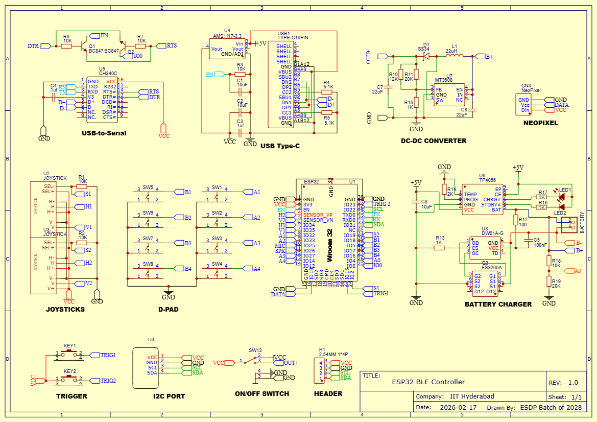
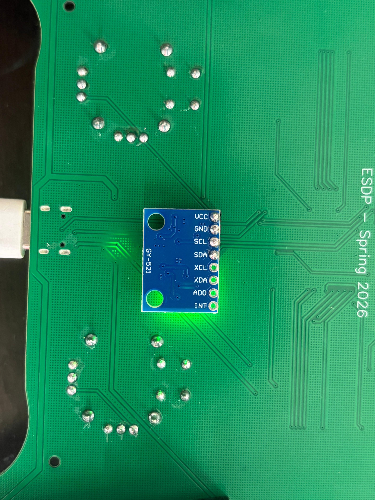

A custom Bluetooth Low Energy gaming controller built using ESP32, featuring dual analog joysticks, MPU6050 motion sensing, RGB LED feedback, battery monitoring, trigger controls and BLE HID gamepad functionality.
View Source CodeThis project was developed as part of the Electronic System Design Project Lab at IIT Hyderabad. The controller functions as a wireless BLE gamepad capable of transmitting joystick, button, trigger and motion-control inputs to PCs and mobile devices.
Wireless low-latency Bluetooth controller using ESP32.
Gyroscope and accelerometer based control inputs.
Precise analog movement and camera control.
WS2812 LEDs provide visual status indication.
Real-time battery percentage reporting via BLE.
Integrated Li-Ion charging and power management.


User Inputs → ESP32 Processing → BLE HID Interface → PC/Mobile Device
Additional subsystems include battery monitoring,
RGB LED indication, trigger controls, and MPU6050-based motion sensing.